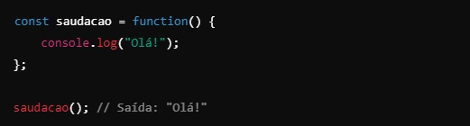
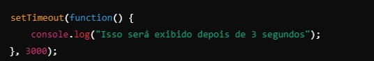
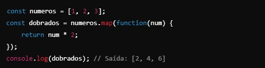
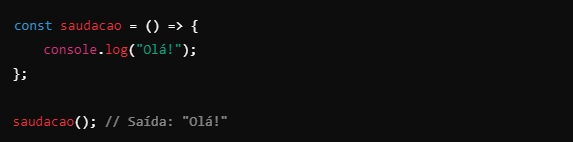

Funções anonimas
Uma função anônima é uma função sem nome.
Elas são úteis quando você quer criar uma função rapidamente,
muitas vezes para ser usada apenas uma vez, ou para passar como argumento para outra função.
Como funciona uma funçã anonima?
Em vez de dar um nome para a função, você define a lógica diretamente.
No JavaScript, você pode criar
uma função anônima de várias formas, mas a mais comum é atribuí-la a uma variável ou usá-la como argumento.
Exemplo de funçã anonima atribuida a uma váriavel

Aqui, saudacao, é uma variavel que "guarda" uam função anonima, e vc pode chama-la pelo nome da
variavel
Para que serve uma funçã anonima?
Funções anonimas são muito usadas quando:
-
Passadas como argumentos para outras funções: Em callbacks (funções executadas apos um evento), as funções anonimas são bastante uteis.
Por exemplo:

Nesse caso, a função anonima é passada como argumento para setTimeout, e só será executada apos 3 segundos
-
Em funções de alta ordem (função que recebem outras funções como parametro): Ao trabalhar com metodos como map, filter e forEach as funções anonimas são comuns.
Exemplo:

-
Para evitar poluir o escopo global: funções anonimas ajudam a evitar criar variavels e funções no escopo global, o que ajuda a manter o codigo mais organizado e a evitar conflintos.
No ES6, podemso usar uma sintaxe mais curta, chamada de arrow function, para criar funções anonimas:

- Funções anonimas são funções sem nome.
- São usadas para logica rapida, especialmente como argumentos para outras fuinções (callbacks).
- Tornam o codigo mais organizado e ajudam a evitar o excesso de variaveos no escopo global